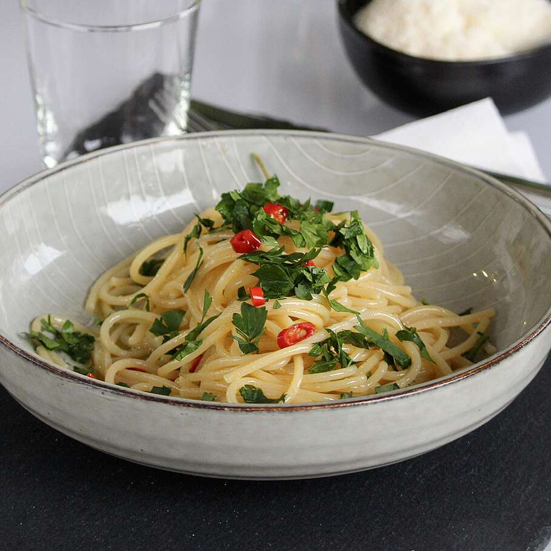

Pasta Aglio, Olio and Peperoncino

Description
A light and summery dish coming from the healthiest mediterranean country on Earth.
This easy Italian dish is ready in minutes and packed with amazing flavor.
Ingredients
- 400g Spaghetti
- 2 cloves of garlic
- 2 red chilis
- 20g fresh parsley
Steps
- Place a pot filled up with salted water to boil. Once boiling, place your spaghetti in the pot. While the spaghetti are cooking we will prepare our sauce.
- Finely chop the cloves of garlic and the red chilis. In a pan add a drizzle of olive oil over medium heat. Once hot, add the garlic and chilis. In the meantime finely chop the parsley.
- Once the pasta is cooked, removed it from the water. Make sure to save a bit of pasta water, we will need it later. Add your pasta to the pan with garlic and chilis and stir. Slowly add a bit of pasta water to make the sauce.
- Once the sauce reached your desired consistency, add the parsley, plate and enjoy!